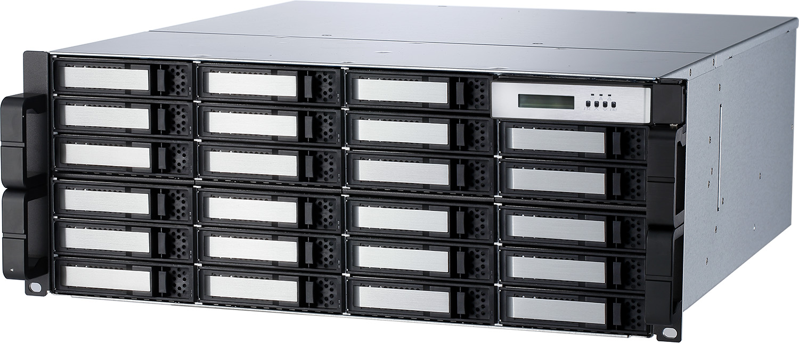

ARC-72xx JBOD Series
(12 Gb/s SAS JBOD Enclosure)
System Architecture
✵ 2U-12, 3U-16 and 4U-24 form factor featuring hot-swappable drives bays
✵ Redundant hot-swappable power supply and cooling fan modules
✵ Activity / Fault LEDs for each individual drive carrier
✵ Single JBOD I/O module with optional upgrade to dual SAS I/O modules for 24-bays
✵ Three 12Gb/s Min SAS SFF-8644 wide ports; one or two host and two or one for expansion to additional JBOD enclosures
✵ Hot swap and redundant components for increased system availability
✵ LCD Control Panel support for easy interactive with module
✵ CLI through out-of-band RS-232 serial port
✵ SES-3 over in-band SAS for enclosure management
✵ Supports any mix of 12Gb/s, 6Gb/s and 3Gb/s SATA and SAS hard drives and SSDs for greater flexibility
Faster Than Ever
Availability & Security
Unparalleled Performance
I/O Interface
2 x SFF-8644 (Host)
1 x SFF-8644 (Expansion)
Management Interface
* CLI / Firmware-embedded manager through
out-of-band RS-232 serial port
* SES 3.0 via inband SAS SMP protocol
Drive Interface
12Gb/s SAS or 6Gb/s and 3Gb/s
SAS/SATA HDDs/SSDs
ARC-72xx Series 12 Gb/s SAS JBOD Enclosure
The new ARC-72xx-JBOD 12G SAS Expander is a series of rackmount storage solution using the latest 12G SAS expander technology providing up to 48Gb/s or 4800MB/s of total data bandwidth (Dual-Port), giving you maximum throughput performance and capacity for any large capacity HD, UHD, 2K and 4K workflow environments. Fan reduces noise to a minimum- making the ARC-72XX JBOD well suited for video/audio applications, without impacting the work environment.
| ARC-72xx Series 12Gb/s SAS JBOD Enclosure | |||
| ARC-7212JS-TR2 | ARC-7216JS-TR3 | ARC-7224JS-TR4 ARC-7224JD-TR4 |
|
| Form Factor | 2U-12 bays 19-inch rackmount chassis | 3U-16 bays 19-inch rackmount chassis | 4U-24 bays 19-inch rackmount chassis |
| Module Support | Single | Single / Dual | |
| External I/O Ports |
• Host Interface per Expander Module :Two 12Gb/s Min SAS HD 4x wide ports via two SFF-8644 connections • Expansion Interface per Expander Module : One 12Gb/s Min SAS HD 4x wide port via one SFF-8644 connection |
||
| Drive Channel per Enclosure | Up to 12 x 3.5”/2.5” HDDs or SSDs |
Up to 16 x 3.5”/2.5” HDDs or SSDs |
Up to 24 x 3.5”/2.5” HDDs or SSDs |
| Data Transfer Rate | Up to 12Gb/s per port | ||
| Expander Controller | ARM Cortex-R4 processor | ||
| Operating Systems | OS Independent | ||
| Cooling Fan | Two Cooling fans | Three Cooling fans | |
| Power Supply/In/out | Dual 400W hot swap, N+1 redundant with PFC | Triple 400W hot swap, N+1 redundant with PFC | |
| Operating Temperature | 0 °C to 40 °C operating / -40 to 60°C non-operation | ||
| Operating Humidity | 10% to 85%, non-condensing | ||
| CE, FCC | |||
| Physical Dimensions (H x W x D) |
• Without handles 88.2 x 445 x 506 mm (3.2 x 17.5 x 19.9 in) • With handles 88.2 x 482 x 542 mm (3.2 x 22.9 x 21.3 in) |
• Without handles 132.6 x 445 x 506 mm (5.2 x 17.5 x 19.9 in) • With handles 132.6 x 482 x 542 mm (5.2 x 22.9 x 21.3 in) |
• Without handles 176.4 x 445 x 506 mm (6.4 x 17.5 x 19.9 in) • With handles 176.4 x 482 x 542 mm (6.4 x 22.9 x 21.3 in) |
| Weight | • Single: 27 kg (59.5 lb) • Dual: 28 kg (61.7 lb) |
• Single: 31 kg (68.3 lb) • Dual: 32 kg (70.5 lb) |
• Single: 34 kg (74 lb) • Dual: 35 kg (77 lb) |
| Warranty | 3 years | ||
Management Monitor
Enclosure Managerment:
LED Indicator:
Powerful Broadcom 12G SAS Expander
ARC-72xx JBOD series integrate the latest Broadcom 12Gb/s SAS expander to give you the maximum SAS and SATA bandwidth and protection you need to tackle even the hardest challenging tasks easily.

DataBolt Technology 12G SAS Expander
The ARC-72xx JBOD is equipped with the latest LSI DataBolt™ technology that intelligently allows 6Gb/s HDD and SSD's to take advantage of 12Gb/s SAS performance by aggregating bandwidth of 6Gb/s drives and intelligently buffering data to 12Gb/s speeds.
SAS Zoning Feature
Users can select a specific group of disk channels and define a zone for it. The ARC-72xx JBOD can be split into up to 8 virtual groups. Each group drive channels and external cable connectors are assigned by CLI GROUP command. The following figure is shown the Arc-72xx-JBOD which has split into 2 virtual groups. Each group drive channels are controlled by individual host adapter using SAS CH1 and SAS CH2.
Daisy-chain Multiple JBODs
The storage capacity can be expanded instantly by adding additional 12G SAS Expander units like the 8/12 bay tower 16/24 or high bay rackmount 12G SASJBODs solutions too! Ultimately allow you to convert your 12G SAS expander storage to be use with any SAS enabled host.
Truly Redundant and Reliable Server-Grade PSU
The hot-swappable 400W PSU is fully redundant capacity. Under normal operation, all power supplies share the load for efficient and stable power delivery. If one power fails, the other one automatically takes over for a clean failover. 1+1 Redundant 400W Low Noise and High Efficiency allows for uninterrupted workflow in the event one of the power units fail. Easy hot-swap power modules are for quick replacement with ultimate reliability and stability for zero system downtime.
Effective Management Tool
Areca provides more flexible management tools comparing with others competitors to manage and monitor SAS JBOD. The ARC-72xx JBOD is normally delivered with LCD pre-installed. Your ARC-72xx JBOD can be managed by using the LCD with keypad or a serial device (terminal emulation).
• LCD: Easy Configuration & Monitor LCD
Instantly monitor system's status as a glance
ARC-72xx JBOD LCD is the primary user interface for the JBOD. All configuration and status of the JBOD can be performed from this interface. The LCD status panel informs you of the JBOD real-time operating status at a glance so users can easily grasp the status of the system at all times.
• RS-232 Port: Easy Configuration
The ARC-72xx JBOD enclosure functions can also be managed via a VT-100 compatible terminal or a PC running a VT-100 terminal emulation program. You can attach a serial (Character-Based) terminal or server com port to the JBOD for accessing the text-based setup menu.
SAS JBOD Power Off Controls
ARC-72xx JBOD contains power Off controls on the expander module. The power Off controls can turn ARC-72XX JBOD power in unison with the RAID subsystems/HBA power status for data integrity. It is advised that you use a proper power down procedure when you would like to power down your RAID subsystems/HBA and JBOD storage. If you attempt to power it down by pressing and holding the power button you run the risk of losing unsaved data and increase the chance of damaging hardware, more specifically the hard drive. Following improper power down sequence of a JBOD storage and attached RAID subsystems/HBA will affect the normal functionality.
Whisper-Quiet Operation
The intelligent cooling continuously adapts to environmental conditions by automatically controlling the speed of cooling fans. As a result, the fan reduces noise to a minimum, almost imperceptible level. Whisper-Quiet Low Sound Levels operation, make the ARC-72XX JBOD well suited for video/audio applications, without impacting the work environment.
| ARC-7212JS-TR2 | ARC-7216JS-TR3 | ARC-7224JS-TR4/7224JD-TR4 | |

|

|
 | |
| Sound Pressure Level | 37.4 dB | 40.3dB | |